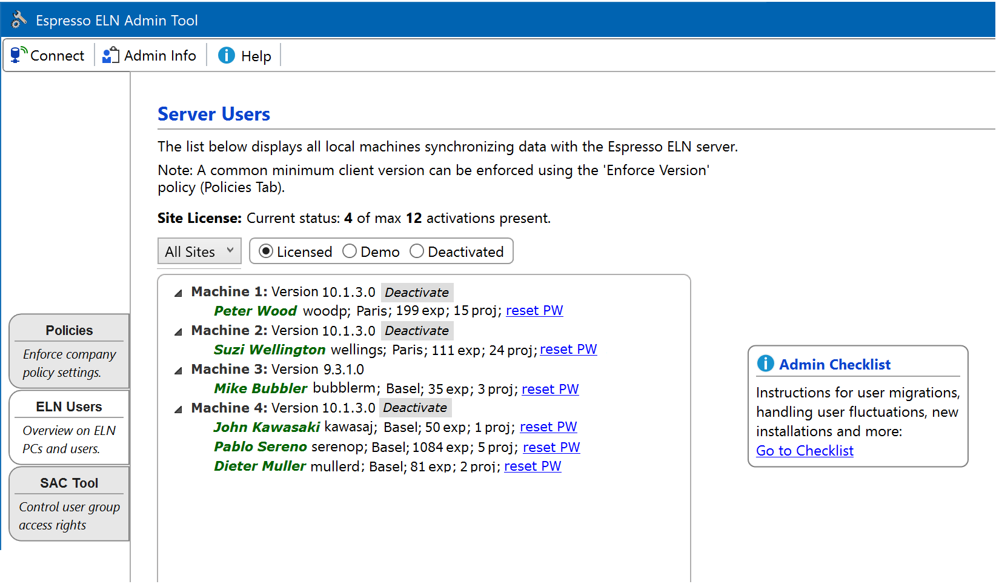

Server Users Section
Server Users
This section provides a list machines connected so far to your in-house ELN server. The local machines are assigned an arbitrary sequential number in the list, the version number relates to the latest installed Espresso ELN version. A machine may contain experiments of multiple local users (displayed in green) sharing the same ELN client - these are assigned to the machine license and don't count individually.
If a Site License is in use, the info line on top of the filter area contains license server information about the current number of activations and their maximum allowed number.
If several company sites are present in the list, then its entries can be filtered by site using the Sites drop down menu; the site filtering quality depends on users specifying identical site (i.e. City) information in their local client user settings (Home Section -> Settings -> User Settings).
Following license categories are available:
- Licensed: Each machine this category counts as one active license (or as one activation for site licenses).
- Demo: This category contains all installations which are not yet activated, i.e. which currently run in evaluation mode.
- Deactivated: This category contains all licenses deactivated by the ELN administrator (see section below).

- The Deactivate button of a machine entry disables a local ELN installation, reducing the site license activation count on the license server by one. The typical use case is a user leaving the organization and a new one performing an activation while retaining the overall activation count before the fluctuation. This button only appears if specific conditions are met. See the License Deactivation section below for more details.
- The Reset PW link resets the personal user password if forgotten. When applied, the user must restart his client and is automatically asked to enter a new password in the process (client version 8.5.2 or later required).
- The displayed number of projects and experiments per user reflects the use type of the ELN application. Project related functionalities like auto-schemes, summaries, and search work most efficiently if experiments created broadly within the same synthetic context are present within a project. Users with a large number of experiments in very few (or even just one) projects should be notified to change their strategy.
- The displayed client versions reflect the version fragmentation across users. Ideally, all users should utilize the same application version to be on the same functionality and bug fix level. A minimum application version can be enforced by activating the 'Enforce Version' policy in the Policies Section of this tool. If applied, this prevents users to start up their client if their version is lower than the specified one.
- Finally, the 'Admin Checklist' box to the right of the users points to summary of procedures admins often are confronted with (user migrations, etc).
License Deactivation
This section applies to site licenses only (see here for handling user fluctuations in a single licenses setup). Deactivation disables a local experiments database and decreases the license server activation count by one. It therefore allows a new user activation without increasing the overall activation count before the fluctuation. A license deactivation ONLY should applied when a user entirely stops to use the ELN, e.g. when leaving the organization, and no other current ELN user on the same machine (if present) actively uses the ELN anymore. Don't deactivate a license if a user remains active and e.g. only his PC needs to be replaced or is newly set up. In such cases instead utilize the Restore from Server functionality to restore the local ELN database along with the license on the new machine.
Deactivate buttons only appear in the Users List if the following conditions are met:
- The current license model must be a site license.
- The version of the client must be 10.1.3 or higher.
A license deactivation has following effects:
- The activation count on the license server is reduced by one.
- The user data on the server are not touched by this operation and remain fully accessible on the server.
- The deactivation is per machine, not per user. If the license is deactivated, this affects all users listed for this particular machine (like the 3 users of 'Machine 4' in above screen shot). Therefore only deactivate a particular license if none of the listed machine users need to work on the affected machine anymore.
- The deactivated local database is invalidated and cannot be used anymore.
- The deactivated local database cannot be restored from the server anymore (but all data still remain accessible server-side).
- Accidentally deactivating a machine license while the ELN client is in use terminates the ELN client.
- The machine entry with the deactivated license is moved from the Licensed category into the Deactivated category.
License Reactivation
This section applies to site licenses only: Since the effects of a license deactivation on a local client are severe, this action can be reverted if it occurred by accident. This action increases the site license activation count by one on the license server again. Follow these steps to reactivate a license:
- Select the Deactivated category in the server users list.
- Locate the desired deactivated license and click its Reactivate button.
- The entry is moved to the Licensed category, and the client is functional again.